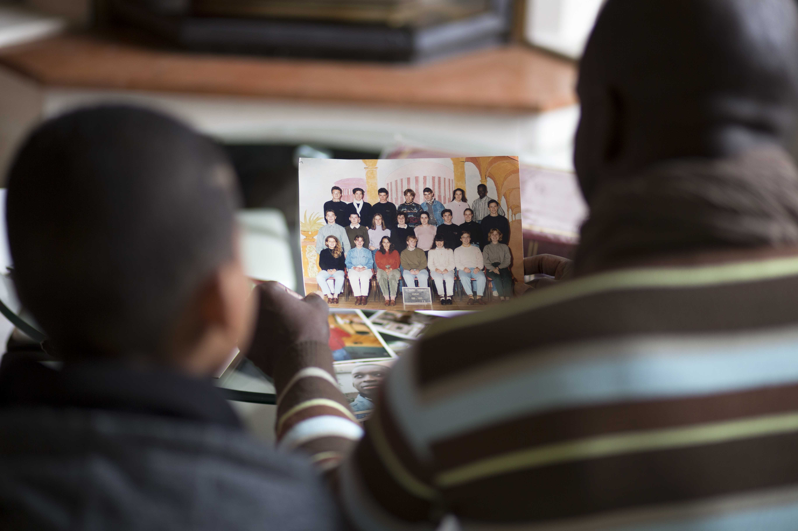
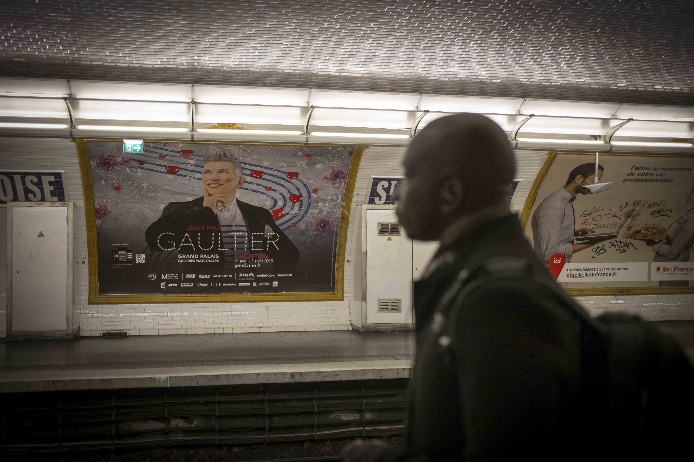
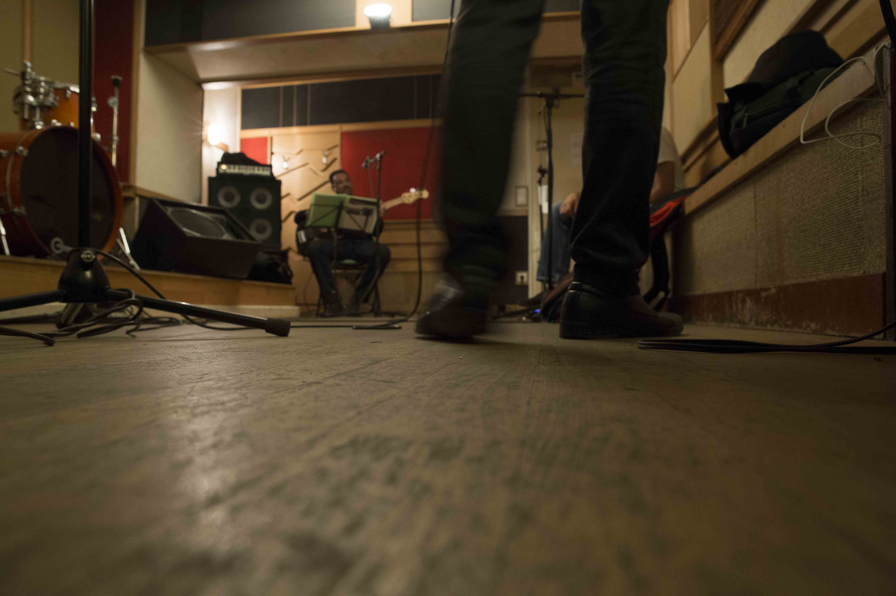
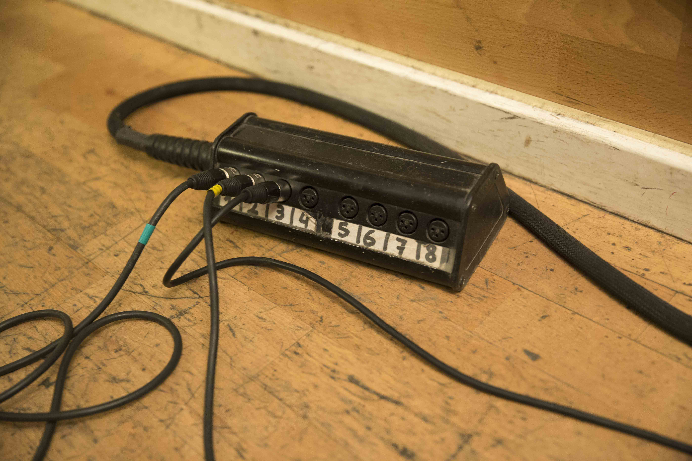
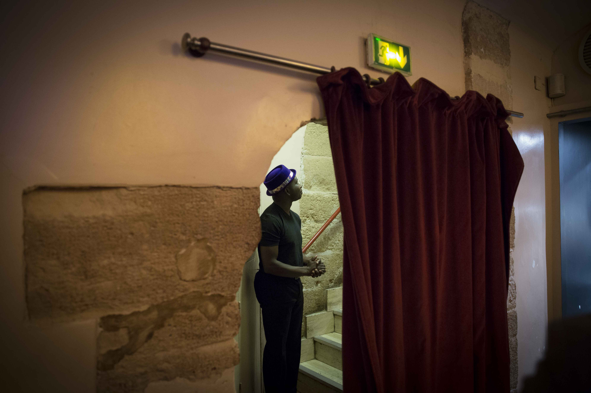

Qu'as-tu fait des rêves de tes 20 ans ?2015
20 ans l'âge de l'insouciance, l'âge des engagements, l'âge des choix.A 20 ans, Régis avait pris l'engagement de réussir ses études. Lui qui était arrivé quelques années plus tôt d’Afrique. Il rêvait de devenir chanteur. Régis a fait son choix. Il est devenu entrepreneur puis cadre en entreprise.Régis a 40 ans aujourd’hui, il travaille dans une start-up… le jour. Le soir, le week-end et pendant ses congés, il s'appelle Kole, son prénom béninois, et il monte sur scène pour chanter ses chansons... écrites à 20 ans. Régis a auto-produit son premier album et fait financer son second sur KissKiss BankBank. Il tourne dans les festivals en France et en Afrique et est aussi à l’origine de la soirée Afrique en Scène pour promouvoir la génération montante de la scène africaine à Paris. Voilà donc 20 ans que Régis poursuit ses rêves de musique. Là où la plupart d’entre nous aurait abandonné depuis bien longtemps, lui a patiemment construit son chemin. Un chemin fait de réussites, de doutes et d'interrogations. A la question, qu'as-tu fait des rêves de tes 20 ans ? Régis répond qu’il n’a jamais arrêté de les cultiver et apporte sa propre réponse entre pragmatisme et idéalisme, entre vie réelle et vie rêvée.
Regis d'aujourd'hui face à ses 20 ans
Regis en famille




Regis et son groupe pendant les répétitions avant son concert au Sunset Sunsite

A quelques minutes de son entrée sur scène